Candidate List 20260823Last night — ZTF: 2,464 passed basic cuts (92 young) · LSST: 0 passed basic cuts (0 young)Previous Day Next Day
Section 1: New Sources (age<1d) Section 2: Old (1-5d) sources observed last nightplaceholder
Section 1: New Afterglow/FBOT Cands Last Night (2)
1. [ZTF] ZTF26abqfhng (Afterglow?) [Back to Top] [Share] [Trigger Swift] [Fritz Alert] [Fritz Source] [Lasair]RA, Dec: 299.13999, 26.49102 19h56m33.60s, 26d29m27.65sGalactic (l, b): 63.69547, -1.14073 ext(g-r) = 3.407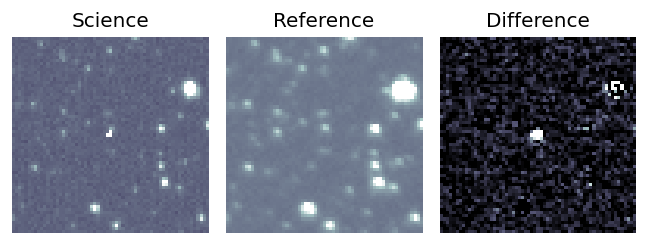
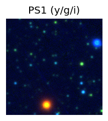

TESS: Sectors [ 14 41 54 55 81 119 120]
PS1: 0 sources in 3 arcsec
LegacySurvey: 0 sources in 3 arcsec
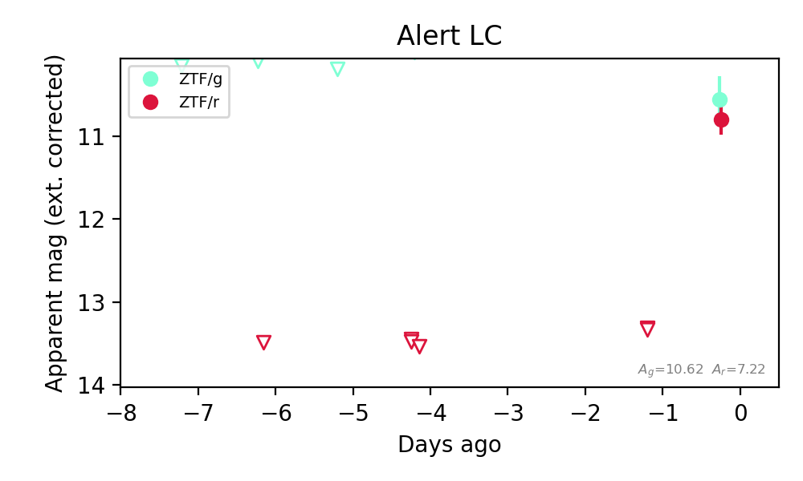
Extinction-corrected gr color:
From alerts: -0.24 +/- 0.34 mag
Consistent with synchrotron, g-r>0!
Rise Rate:
r: 2.66 mag/day
Fade Rate:
2. [ZTF] ZTF26abqgbkd (Afterglow?) [Back to Top] [Share] [Trigger Swift] [Fritz Alert] [Fritz Source] [Lasair]RA, Dec: 312.74037, 7.65855 20h50m57.69s, 7d39m30.78sGalactic (l, b): 54.73452, -22.25114 ext(g-r) = 0.102


TESS: Sectors [55 81 82]
PS1: 0 sources in 3 arcsec
LegacySurvey: 1 sources in 3 arcsec Closest: d = 0.05 arcsec, 132.5 deg (east of north) photoz=0.97 (68% bounds 0.07, 1.75), type=PSF peak abs mag (ext. corrected) = -26.92 (68% bounds -20.53, -28.49)

Extinction-corrected gr color:
From alerts: -0.64 +/- 0.09 mag
Extinction-corrected gi color:
From alerts: -0.68 +/- 0.1 mag
Extinction-corrected ri color:
From alerts: -0.04 +/- 0.11 mag
Consistent with synchrotron, g-r>0!
Rise Rate:
g: 0.74 mag/day
r: 0.61 mag/day
i: 0.48 mag/day
Fade Rate:
Section 2: Older Sources Observed Last Night (10)
0. [ZTF] ZTF26abpanks (FBOT?) [Back to Top] [Share] [Trigger Swift] [Fritz Alert] [Fritz Source] [Lasair]RA, Dec: 352.79839, -10.17866 23h31m11.61s, -10d-10m-43.17sGalactic (l, b): 70.98667, -64.61046 ext(g-r) = 0.026


TESS: Sectors [ 2 29 42 92]
SDSS (<15 kpc):Found SDSS phot-z: z=0.89; peak abs mag = -25.69
PS1: 0 sources in 3 arcsec
LegacySurvey: 1 sources in 3 arcsec Closest: d = 0.35 arcsec, 71.3 deg (east of north) photoz=0.8 (68% bounds 0.14, 1.63), type=REX peak abs mag (ext. corrected) = -25.42 (68% bounds -20.99, -27.31)

Extinction-corrected gr color:
From alerts: -0.3 +/- 0.11 mag
Extinction-corrected gi color:
From alerts: -0.4 +/- 0.12 mag
Extinction-corrected ri color:
From alerts: -0.29 +/- 0.12 mag
Rise Rate:
g: 0.24 mag/day
r: 0.26 mag/day
i: 0.2 mag/day
Fade Rate:
1. [ZTF] ZTF26abpbjfg (Afterglow?) [Back to Top] [Share] [Trigger Swift] [Fritz Alert] [Fritz Source] [Lasair]RA, Dec: 10.72016, 41.18279 0h42m52.84s, 41d10m58.04sGalactic (l, b): 121.19966, -21.66017 ext(g-r) = 0.415


TESS: Sectors [17 57 84]
PS1: 1 source in 3 arcsec Closest: d = 0.77 arcsec photoz=0.45+/-0.03 peak abs mag = -25.65
LegacySurvey: 0 sources in 3 arcsec

Extinction-corrected gr color:
From alerts: -2.25 +/- 99 mag
Rise Rate:
g: 0.49 mag/day
r: 0.89 mag/day
Fade Rate:
r: 0.97 mag/day
2. [ZTF] ZTF26abpdupa (FBOT?) [Back to Top] [Share] [Trigger Swift] [Fritz Alert] [Fritz Source] [Lasair]RA, Dec: 231.65383, 81.93423 15h26m36.92s, 81d56m3.24sGalactic (l, b): 116.89562, 33.28471 ext(g-r) = 0.05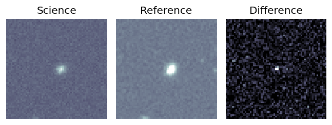
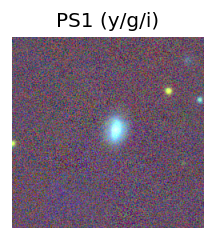
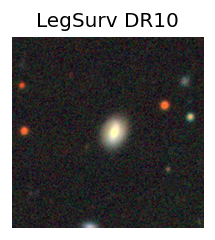
TESS: Sectors [ 14 19 21 25 26 41 47 48 52 53 59 60 73 74 75 79 86 119
120]
NED photo-z only: WISEA J152635.76+815603.2 (G, 2.4″) z=0.0643 [zflag PUN] — not used for peak abs mag
PS1: 0 sources in 3 arcsec
LegacySurvey: 1 sources in 3 arcsec Closest: d = 2.01 arcsec, 7.6 deg (east of north) photoz=0.18 (68% bounds 0.08, 0.4), type=EXP peak abs mag (ext. corrected) = -20.67 (68% bounds -18.64, -22.64)
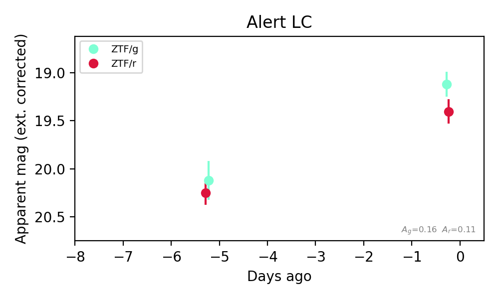
Extinction-corrected gr color:
From alerts: -0.28 +/- 0.18 mag
Rise Rate:
g: 0.2 mag/day
r: 0.17 mag/day
Fade Rate:
3. [ZTF] ZTF26abpgdyr (FBOT?) [Back to Top] [Share] [Trigger Swift] [Fritz Alert] [Fritz Source] [Lasair]RA, Dec: 308.87619, 51.59002 20h35m30.29s, 51d35m24.06sGalactic (l, b): 88.73487, 6.59014 ext(g-r) = 0.665


TESS: Sectors [ 15 16 41 55 56 75 76 82 83 120 121]
PS1: 1 source in 3 arcsec Closest: d = 7.62 arcsec photoz=0.09+/-0.01 peak abs mag = -20.57
LegacySurvey: 0 sources in 3 arcsec

Extinction-corrected gr color:
From alerts: 0.58 +/- 0.23 mag
Consistent with synchrotron, g-r>0!
Rise Rate:
g: 0.32 mag/day
r: 0.3 mag/day
Fade Rate:
4. [ZTF] ZTF26abpnwae (Afterglow?) [Back to Top] [Share] [Trigger Swift] [Fritz Alert] [Fritz Source] [Lasair]RA, Dec: 302.17453, 11.23213 20h 8m41.89s, 11d13m55.68sGalactic (l, b): 52.07383, -11.53214 ext(g-r) = 0.165


TESS: Sectors [54 81]
PS1: 1 source in 3 arcsec Closest: d = 4.55 arcsec photoz=0.39+/-0.06 peak abs mag = -24.09
LegacySurvey: 0 sources in 3 arcsec

Extinction-corrected gr color:
From alerts: -0.13 +/- 0.14 mag
Extinction-corrected gi color:
From alerts: -0.19 +/- 0.16 mag
Extinction-corrected ri color:
From alerts: -0.06 +/- 0.15 mag
Consistent with synchrotron, g-r>0!
Rise Rate:
g: 1.17 mag/day
r: 0.4 mag/day
i: 0.91 mag/day
Fade Rate:
g: 0.17 mag/day
5. [ZTF] ZTF26abpvgpm (FBOT?) [Back to Top] [Share] [Trigger Swift] [Fritz Alert] [Fritz Source] [Lasair]RA, Dec: 347.26898, 23.55085 23h 9m4.55s, 23d33m3.04sGalactic (l, b): 94.54158, -33.61647 ext(g-r) = 0.191


TESS: Sectors [56 83]
PS1: 0 sources in 3 arcsec
LegacySurvey: 1 sources in 3 arcsec Closest: d = 0.45 arcsec, 64.9 deg (east of north) photoz=0.44 (68% bounds 0.31, 0.62), type=EXP peak abs mag (ext. corrected) = -22.1 (68% bounds -21.23, -23.0)

Extinction-corrected gr color:
From alerts: -0.19 +/- 0.21 mag
Consistent with synchrotron, g-r>0!
Rise Rate:
g: 0.2 mag/day
r: 0.22 mag/day
Fade Rate:
6. [ZTF] ZTF26abpwzbm (Afterglow?) [Back to Top] [Share] [Trigger Swift] [Fritz Alert] [Fritz Source] [Lasair]RA, Dec: 6.33488, 16.64354 0h25m20.37s, 16d38m36.76sGalactic (l, b): 113.95229, -45.77267 ext(g-r) = 0.077


TESS: Sectors [57 84]
SDSS (<15 kpc):Found SDSS phot-z: z=0.08; peak abs mag = -18.16
PS1: 0 sources in 3 arcsec
LegacySurvey: 1 sources in 3 arcsec Closest: d = 1.95 arcsec, 72.3 deg (east of north) photoz=0.13 (68% bounds 0.12, 0.16), type=REX peak abs mag (ext. corrected) = -19.33 (68% bounds -19.13, -19.67)

Extinction-corrected gr color:
From alerts: -0.05 +/- 0.3 mag
Extinction-corrected gi color:
From alerts: 0.0 +/- 0.27 mag
Extinction-corrected ri color:
From alerts: -0.35 +/- 0.32 mag
Consistent with synchrotron, g-r>0!
Rise Rate:
g: 0.32 mag/day
r: 0.26 mag/day
i: 0.64 mag/day
Fade Rate:
7. [ZTF] ZTF26abpyrfi (FBOT?) [Back to Top] [Share] [Trigger Swift] [Fritz Alert] [Fritz Source] [Lasair]RA, Dec: 262.39078, 15.40504 17h29m33.79s, 15d24m18.15sGalactic (l, b): 38.16292, 24.90856 ext(g-r) = 0.097


TESS: Sectors [ 25 26 52 53 79 118]
PS1: 0 sources in 3 arcsec
LegacySurvey: 1 sources in 3 arcsec Closest: d = 1.31 arcsec, 182.4 deg (east of north) photoz=0.09 (68% bounds 0.08, 0.11), type=SER peak abs mag (ext. corrected) = -19.95 (68% bounds -19.55, -20.37)

Extinction-corrected gr color:
From alerts: -0.53 +/- 0.13 mag
Rise Rate:
g: 0.5 mag/day
r: 0.4 mag/day
Fade Rate:
8. [ZTF] ZTF26abqbvxi (FBOT?) [Back to Top] [Share] [Trigger Swift] [Fritz Alert] [Fritz Source] [Lasair]RA, Dec: 343.05299, -5.33698 22h52m12.72s, -5d-20m-13.13sGalactic (l, b): 65.0904, -54.22466 WARNING: 1.73 deg from ecliptic plane ext(g-r) = 0.038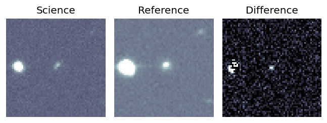
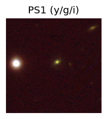
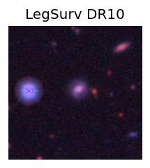
TESS: Sectors [42 70 92]
SDSS (<15 kpc):Found SDSS phot-z: z=0.17; peak abs mag = -19.48
PS1: 0 sources in 3 arcsec
LegacySurvey: 1 sources in 3 arcsec Closest: d = 1.97 arcsec, 202.5 deg (east of north) photoz=0.26 (68% bounds 0.19, 0.38), type=SER peak abs mag (ext. corrected) = -20.45 (68% bounds -19.68, -21.42)
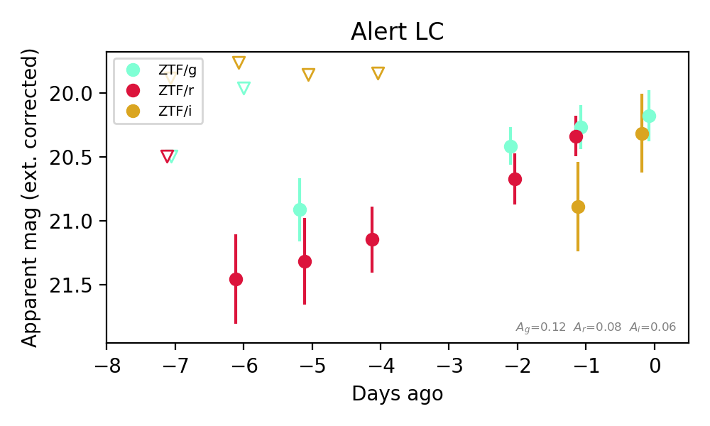
Extinction-corrected gr color:
From alerts: -0.07 +/- 0.23 mag
Extinction-corrected gi color:
From alerts: -0.14 +/- 0.36 mag
Extinction-corrected ri color:
From alerts: -0.55 +/- 0.38 mag
Consistent with synchrotron, g-r>0!
Rise Rate:
g: 0.15 mag/day
r: 0.24 mag/day
Fade Rate:
9. [ZTF] ZTF26abqhrsi (Afterglow?) [Back to Top] [Share] [Trigger Swift] [Fritz Alert] [Fritz Source] [Lasair]RA, Dec: 309.49527, 31.95215 20h37m58.86s, 31d57m7.74sGalactic (l, b): 73.28625, -5.5799 ext(g-r) = 1.028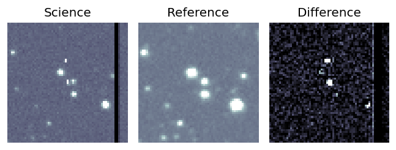
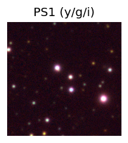

TESS: Sectors [ 14 41 55 82 120]
PS1: 0 sources in 3 arcsec
LegacySurvey: 0 sources in 3 arcsec
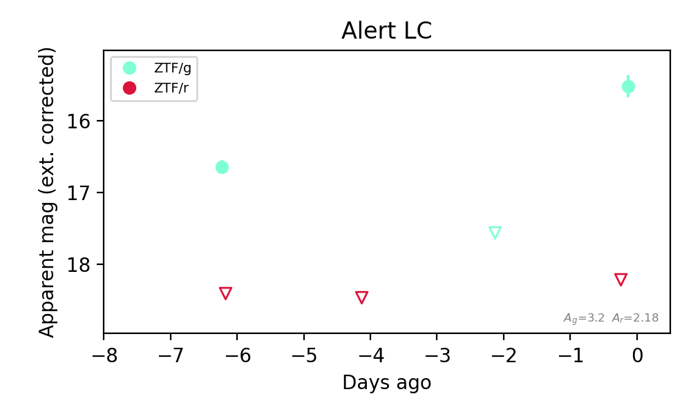
Extinction-corrected gr color:
From alerts: -2.69 +/- 99 mag
Rise Rate:
g: 1.02 mag/day
Fade Rate:
g: 0.22 mag/day